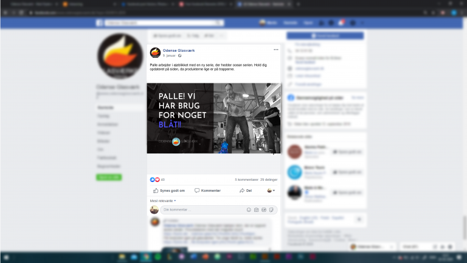
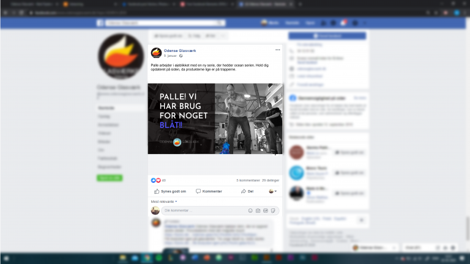

ANDRÉ HØRSLEV DIJKHUIZEN
Multimediedesigner
Multimediedesigner

Jeg er 25 år og kommer fra Vordingborg.
Jeg er igang med 3. Semester på UCL, hvor jeg til dagligt læser til Multimediedesignere.
Jeg har boet lidt rundt omkring i Europa,
har boet 2 og et halv år i Portugal samt 1 halvandet år i Holland. Hvilket har givet mig en god kulture
forståelse i Europa.
Jeg er stadig lidt i om at blive webudvikler eller grafiks designer, jeg holder meget af et simple og stil rent design med spændende farver.
Ellers er jeg en positiv og smilende person der altid er klar på at give en hjælpende hånd og er altid frisk på en udfordring.
Jeg har god forståelse indenfor HTML & CSS samt JavaScript som har givet den kompetence at lave stilren og enkelte hjemmsider men samtidig også kode noget indenfor kundens behov.
Jeg har et rigtig godt kendskab til Adobe XD, da jeg har brugt det i et par af mine projekter. XD giver mig den mulighed for at kunne sætte mine wireframes og mock up's op så jeg har en klar idé om, hvordan hjemmesider skal se ud.
Med min gode evner inden for Adobe Illustrator cc har givet det mig den mulighed at kunne designe/lave logoer og portrætter til virksomheder.
Adobe Photoshop har jeg brugt til mange projekter og har derfor givet mig en god forståelse når det kommer til redigering af billeder f.eks. billdet af mig oppe ved toppen havde en hvid baggrund som jeg så brugte photoshop til at fjerne baggrunden med.
Redesign af hjemmeside (Baagø) var mit først projekt på 1. Semester som multimedie design studerende.
Opgave gik ud på at vi skulle i grupper redesigne mellem 2 forskellige hjemmesider. Den ene hjemmeside var Fyens Rideklub og den som min gruppe fik var Baagøs hjemmeside. Efter vi havde redesignet hjemmesiden skulle vi lave en klientrapport. Billedet til højre som man kan se nedefor er den nuværende startside til Baagø og den til venstre er så den redesignede og mere moderne side. Det program vi brugte til at redesign, var Adobe XD.


Det jeg fik ud af denne opgave var en bred forståelse, hvordan man bruger Adobe XD til at kunne bruge sin kreativ side inden man går i gang med at kode en hjemmeside. XD hjælper med at giver tanker et visuelt touch til ens ideer, og hjælper med at realisere dem.
Odense Glasværk var det første projekt i starten af 2. Semester.
Projektet gik ud på at vi skulle starte med at vælge en brochure eller folder. Da vi så havde valgt en brochure skulle vi producere indhold og visuel kommunikation, der formidler afsenderens budskab, hvilket i dette tilfælde var Odense Glasværk som vi havde valgt. Indholdet skal så implementeres i minimum 3 mediekanaler, hvoraf det ene er kodet med html, css og javascript altså en hjemmeside. Ellers fik vi også lavet en reklamevideo og facebook side til Odense Glasværk.
 

Som det tredje medie fik vi produceret en reklame video, hvor vi brugte Adobe Premiere Pro. Jeg var ikke den der lavede videoen men var med at komme med ideer til hvad den skulle indeholde.
Til dette projekt lærte jeg at implementer SEO til vores kode, som gav mig en forståelse til hvordan SEO fungere. Da vi gik igang med at kode vores hjememside til glasværket, var det første gang jeg skulle tilføje JavaScript og hvordan man brugte github som gruppe. Ellers var det et okay projekt at starte 2. Semester på men der var plads til en helt del forbedringer.
For at se siden min gruppe og jeg fik lavet kan du klikke på linket her: Odense Glasværk
Robot-Nordic var mit eksamenprojekt for 2. Semester.
Dette projekt gik ud på at vi skulle designe og udvikle en optimeret og kompleks brugergrænseflade, så den bedst mulige brugeroplevelse opnås. Vi skulle vælge med to forskellige virksomheder som var Robot Nordic & Trendlog. Men det som vi skulle lave for Robot Nordic var at vi skulle designe en brugervenlige brugergrænseflade til operatører af deres system for et intelligent software til mixpalletereing som de har udviklet, der kan beregne den optimale pakkemetode ud fra vægt og størrelse på produkter.


Med Robot-Nordic fik vi som gruppe udarbejdet en hel del modellen såsom golden circle, budskabdesign og værdi trappen samt en business model canvas. Vi fik også lavet vores moodboard og derefter vores styletile. Robot Nordic ønskede at bibeholde deres nuværende logo samt farver. Da vi fik styr på vores moodboard samt styletile kunne vi udarbejde hver vores userflow, hvor de gode idéer fra hvert flow blev taget og sat sammen til én userflow, hvilket fik sat grundlaget for designet til vores prototype. Herefter begyndte vi på at designe vores wireframes i Adobe XD samt en styleguide der hjælper os med at holde den sammen designstil da vi er flere der skal kode. Da det så var blevet gjort kunne vi så småt begynde at kode vores prototype til Robot Nordic. De kode sprog som er blevet brugte til at kode prototypen i er HTML, CSS & JavaScript.
For at se den siden jeg fik lavet til Robot-Nordic med min gruppe kan du klikke på linket her: Robot-Nordic
Matas projektet var i samarabrjede med Hesehuse og var projektet lige inden eksamenprojektet.
I dette projekt skulle vi starte med at vælge 1 firma med et case ud af 2 andre virksomheder. Det firma min studiegruppe og jeg valgte at arbejde med og det som vi synes var mest spændende var Hesehuse med en case om Matas. De resterende virksomheder var Abtion & House of Code. Matas’ case gik ud på at vi skulle prøve at finde ud af hvordan Matas kan digitale indstats bluve endnu bedre? Det skulle vi gøre ved at komme med input til website, app & gerne butik. Vi valgte så at komme med input til at nyt mobilvenlig website.


Det som jeg personligt mest er stolt af er de bobler som kører i baggrunden jeg fik lavet med JavaScript som kan ses i videoen.
Det vi gjorde for at komme i gang med projektet var at lave en grundig spørgeundersøgelse så vi kunne få data så hurtigt som muligt. Da vi så fik alt det data vi mente var nok gik vi i gang med at bruge de mange modeller vi har lært gennem semestret såsom affinity diagram så vi kunne finde et gennemgående tema til vores kommende website og ved brug af affinity diagrams kom vi frem til at grunden til forbrugerne gik til Matas var fordi de kunne få råd & vejledning omkring produktet. Det ville vi så gerne prøve at få indført noget mere til netop Matas’ hjemmeside side.
For at se vores prototype for proejektet klik her: Hesehuse - Matas (Det skal lige siges at den kun er lavet til mobilversion (iPhone X))


Er jeg den rette praktikant?
Hvis jeg lyder som den person du har brug for.
Så er du altid velkommen til at kontakte mig enten på e-mail eller de sociale medier.
Sender du en e-mail vil jeg svare på den hurtigst muligt.